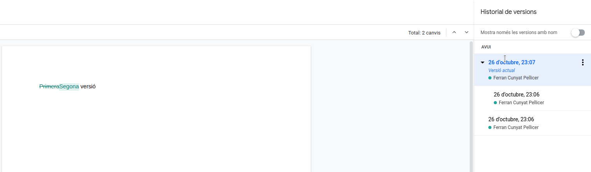
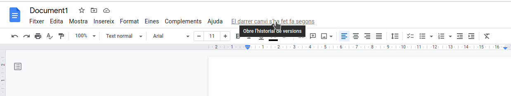
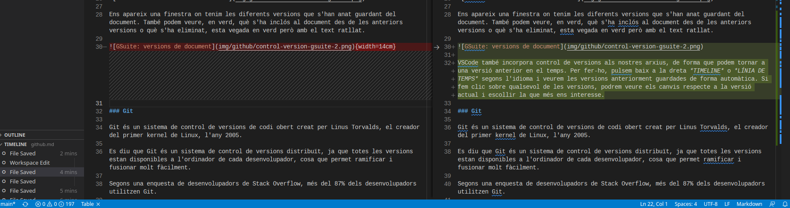
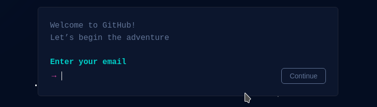
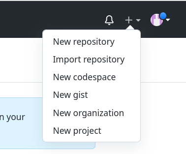
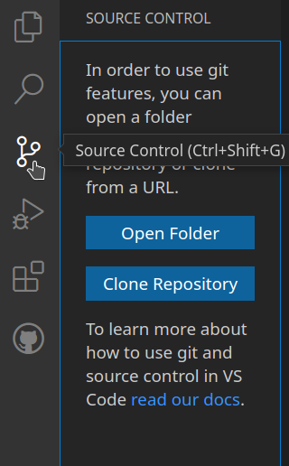
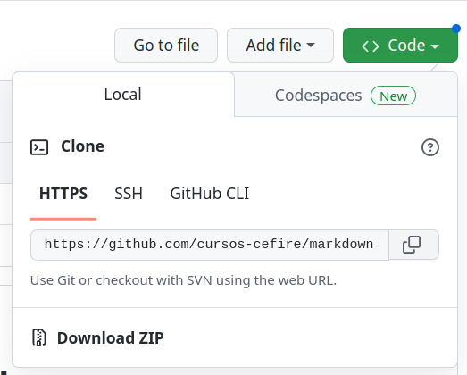
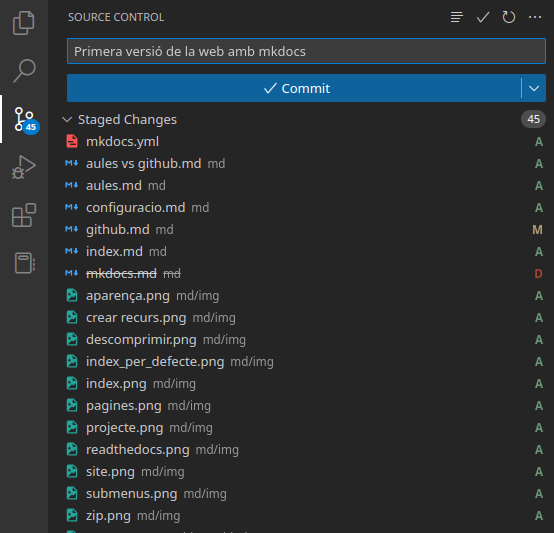
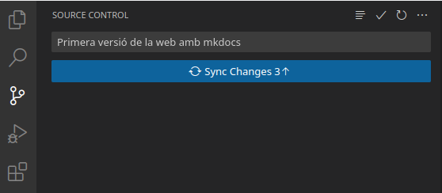
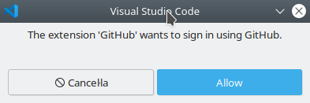

Allotjament en GitHub
1. Allotgem la nostra web en el servidor de GitHub
1.1. Què és un sistema de control de versions?
Per a entendre què és GitHub, primer hem de conèixer dos conceptes relacionats:
- Sistema de control de versions
- Git
Un sistema de control de versions* ajuda als desenvolupadors (o creadors de contingut) a rastrejar i gestionar els canvis que es van produint en un projecte. S'utilitza de forma molt habitual en el desenvolupament de programari, però també pot aplicar-se a altres àmbits, com l'educatiu, per a gestionar els nostres apunts de forma organitzada.
Vegem un exemple:
Imagina que som desenvolupadors col·laborant en Wordpress. Si un d'aquests desenvolupadors volgués treballar en una part concreta del codi de Wordpress, no seria segur ni eficient editar el codi “oficial” directament.
En el seu lloc, el control de versions permet als programadors treballar amb seguretat a través de ramificacions i fusions*:
- Ramificació: un desenvolupador duplica el codi font (anomenat repositori) en el seu equip local i pot modificar només aquesta part, sense afectar la resta del projecte.
- Fusió: quan el desenvolupador ha provat i confirmat que els seus canvis funcionen correctament, integra (fusiona) la seva part del codi amb la branca principal, fent oficials les modificacions.
El sistema de control de versions ens permet, entre altres coses, veure quins canvis s'han fet, revertir-los, fusionar-los o fins i tot tornar a versions anteriors del projecte.
Un altre exemple molt clar de control de versions ho veiem en Google Docs. Per a accedir a les diferents versions d'un document, n'hi ha prou amb fer clic en l'indicador que mostra l'última data de modificació. En la finestra que apareix, podem veure totes les revisions guardades, observar en verd el que s'ha afegit o canviat i, si ho desitgem, revertir el document a un estat anterior.

A més de la vista amb totes les versions, també podem veure en verd el contingut nou i, a vegades, amb text ratllat les parts que s'han eliminat.

VSCode també ofereix un sistema bàsic de control de versions per als nostres arxius: permet tornar a un punt anterior en el temps. Per a usar-ho, fes clic en la part inferior dreta, en TIMELINE o LÍNIA DE TEMPS (segons l'idioma), on veuràs les diferents versions que s'han guardat de manera automàtica. En prémer sobre qualsevol versió, l'editor et mostrarà els canvis realitzats respecte a l'actual i et donarà l'opció de recuperar la versió anterior si així ho prefereixes.

1.1.1. Git
Git és un sistema de control de versions de codi obert creat per Linus Torvalds (el desenvolupador inicial del kernel de Linux) en 2005.
Es considera un sistema de control de versions distribuït, ja que totes les versions del projecte estan disponibles en l'ordinador de cada desenvolupador, la qual cosa facilita enormement la creació de branques i la fusió de codi.
D'acord amb enquestes de Stack Overflow, més del 87% dels desenvolupadors utilitzen Git, la qual cosa ho converteix en l'eina més popular per al control de versions en l'actualitat.
1.2. Llavors, què és GitHub?
GitHub és una plataforma que ofereix allotjament gratuït de repositoris Git en el núvol. Dit d'una altra manera, permet utilitzar repositoris Git a través de la web sense necessitat de treballar sempre amb la línia de comandos.
La seva interfície és molt senzilla i intuïtiva, la qual cosa ha fet que GitHub siga molt popular no sols per a desenvolupar programari, sinó també per a gestionar tot tipus de projectes (llibres, apunts, documentació, etc.).
En crear repositoris en GitHub, pots decidir si seran públics —accessibles per a qualsevol— o privats, i en aquest cas només els col·laboradors designats podran accedir a ells.
Sobre GitHub
GitHub es va llançar en 2008.
En 2018, Microsoft va adquirir GitHub per 7.500 milions de dòlars.
Al gener de 2020, GitHub comptava amb més de 40 milions d'usuaris, més de 190 milions de repositoris i 28 milions de repositoris públics.
2. Configuració de GitHub
2.1. Registre d'usuari
En aquest primer apartat crearem un repositori en GitHub per a allotjar la nostra pàgina web.
El primer pas consisteix a registrar-nos en GitHub (si encara no tenim compte), accedint al següent enllaç: https://github.com/signup.
Registre
Observa que el procés de registre es realitza mitjançant un formulari totalment integrat en la web, amb una estètica molt cuidada.

2.2. Creació d'un repositori
Un repositori de GitHub és un projecte allotjat en el núvol sobre el qual volem portar un control de versions a través de la web.
Repositori local de GitHub
També podem clonar un repositori en el nostre disc dur per a treballar de manera local i pujar només els canvis definitius per a la seva publicació.
Visual Studio Code (VSCode) facilita molt aquest procés de treball amb repositoris de GitHub.
Per a crear un repositori, iniciem sessió en https://github.com. Després, en la part superior dreta, premem el botó amb el símbol + i triem l'opció New repository.

Assignem un nom que identifique el repositori i el marquem com a públic (o privat, si així ho desitgem). Opcionalment, podem afegir un fitxer README i una llicència.
2.3. Clonació del repositori
A continuació, descarregarem el repositori de GitHub al nostre ordinador per a poder agregar-li contingut. Una vegada comprovat que tot funciona, tornarem a pujar aquests canvis a GitHub perquè es publique la web.
Per a obtenir el codi i treballar en ell, és necessari clonar el repositori en el nostre disc dur. Utilitzarem la pestanya de control de versions integrada en Visual Studio Code per a fer-ho:

VSCode ens demanarà la URL del repositori que volem clonar. Podem obtenir-la des de GitHub de dues maneres distintes, depenent de si el repositori està completament buit o si ja conté algun arxiu (per exemple, readme.md i LICENSE).

Git
Si no tens Git instal·lat, l'opció per a clonar el repositori apareixerà deshabilitada.
En sistemes basats en Debian/Ubuntu es pot instal·lar amb:
| Bash | |
|---|---|
En Windows, pots visitar aquest enllaç per a descarregar l'última versió enllace.
Si tot es clona correctament, veuràs que s'ha creat una carpeta amb el mateix nom del repositori en la ubicació triada. En cas que el repositori continga arxius, els trobaràs dins d'aquesta carpeta.
2.4. Configurem el projecte de mkdocs per a publicar en GitHub
Ara hem de crear un projecte de mkdocs dins de la carpeta del repositori o, si el preferim, copiar un projecte de mkdocs que hàjam creat prèviament dins de la carpeta clonada de GitHub.
mkdocs new
Quan creem un projecte mkdocs des de zero, utilitzem el comando mkdocs new "nom_del_projecte".
No obstant això, si ja tenim una carpeta del repositori clonat en GitHub, haurem d'executar mkdocs new "nom_carpeta_github".
D'aquesta manera, mkdocs usarà directament aquesta carpeta (en lloc de crear una carpeta niada dins de l'altra).
Carpeta docs i site
Per defecte, els arxius Markdown en un projecte mkdocs es troben en la carpeta docs, mentre que el lloc web generat es construeix en la carpeta site. No obstant això, GitHub Pages només pot publicar una web des de l'arrel del repositori o des de la carpeta docs.
Per tant, tenim dues opcions:
- Executar
mkdocs buildi copiar el contingut de la carpetasitea l'arrel del repositori (opció no recomanada). - Ajustar la configuració perquè els arxius font en Markdown estiguin en una altra carpeta i el resultat de la compilació es generi en
docs(opció recomanada). Amb la segona opció recomanada podem conservar tant els arxius font en Markdown com la web compilada en un mateix repositori de GitHub.
Per a configurar aquesta segona opció, hem de modificar l'arxiu de configuració de mkdocs i indicar el següent:
Així, els arxius Markdown se situen en una carpeta anomenada md, mentre que el resultat de la construcció (build) es diposita en la carpeta docs.
Quan executem el comando mkdocs build, els arxius finals de la web es generaran automàticament en la carpeta docs.
2.5. Agreguem els arxius locals al repositori remot de GitHub
Ara hem de publicar els canvis que acabem de realitzar en la nostra còpia local del repositori perquè apareguen en GitHub.
Fixa't en què en l'explorador d'arxius de VSCode, a l'esquerra de cada arxiu, pot aparèixer la lletra u (untracked, és a dir, no inclòs encara en el repositori) o M (modified, modificat després d'un commit previ).
Per a pujar aquests arxius, anirem a la pestanya Source Control (Control de codi font) en el costat esquerre de VSCode. Allí, escrivim un missatge indicant els canvis que hem realitzat i premem el botó Commit. Per exemple, podríem escriure alguna cosa com: “Primera versió de la web amb mkdocs”.

VSCode mostrarà una finestra preguntant si volem afegir i confirmar tots els canvis alhora. Acceptem per a continuar.
Per a evitar si es produeix algun error de configuració de Git, és probable que hajam d'indicar el nostre nom i correu mitjançant els següents comandos (amb les dades que utilitzem en el registre de GitHub):
| Bash | |
|---|---|
2.6. Pugem els canvis a GitHub
Una vegada fets els commits en el repositori local, només ens queda sincronitzar els canvis amb el repositori remot.
Per a això, premem en el botó de sincronització (que apareix on abans vèiem el de commit, dins de la pestanya de control de versions).

VSCode sol·licitarà permís perquè l'extensió de GitHub (que ve integrada per defecte) inicie sessió i puga guardar els canvis en el repositori remot. Hem de concedir-li permís; això iniciarà un intercanvi de tokens entre el navegador i VSCode per a assegurar l'autenticació. Si no havíem iniciat sessió en GitHub, ens demanarà usuari i contrasenya.

Si tot ha anat bé, en la part de comptes d'usuari (icona situada a baix a l'esquerra en VSCode) apareixerà la nostra sessió de GitHub iniciada i el repositori local quedarà sincronitzat amb el remot.
Podem verificar que els nostres arxius s'han pujat correctament accedint a GitHub i comprovant que, en la pàgina del repositori, apareixen els nous fitxers.
3. Configurem GitHub perquè publique la web
Finalment, només queda ajustar la configuració en GitHub perquè publique el nostre build.
Accedeix a la pestanya Settings del repositori i cerca la secció Pages. Selecciona la branca principal (normalment main) i la carpeta docs com a ubicació de la web.
Després d'uns instants (la primera vegada pot trigar 5 minuts), GitHub indicarà si la pàgina s'ha publicat o si hi ha hagut algun problema. Si tot està correcte, veuràs l'adreça on s'ha publicat la web, normalment amb el format https://nombre_usuario.github.io/nombre_repositorio. Pots provar de navegar a aquesta direcció per a veure si la teva pàgina es mostra tal com apareixia en el servidor local.
Treball local i treball remot
Els arxius poden modificar-se tant des de la web de GitHub com des del teu entorn local. No obstant això, per a projectes basats en mkdocs, sol ser necessari compilar la web (build) abans que els canvis es vegen reflectits. Per això, és aconsellable treballar en local per a poder generar el lloc, i després pujar (push) els canvis.
Construcció de la web
Recorda executar el comando mkdocs build abans de pujar els canvis, en cas contrari només s'actualitzaran els arxius font i no la web generada. En general, GitHub Pages triga un parell de minuts a reflectir els canvis després de sincronitzar amb el repositori remot.
Ús de Source Control
Si estàs acostumat a treballar amb Git i GitHub des de línia de comandos, pots utilitzar directament git clone, git add, git commit i git push. Visual Studio Code actua com una interfície gràfica que simplifica el procés, però el funcionament intern és el mateix.
4. El meu arxiu complet mkdocs.yml
Us deixe com tinc configurat el meu arxiu mkdocs.yml de la web del Projecte intermodular